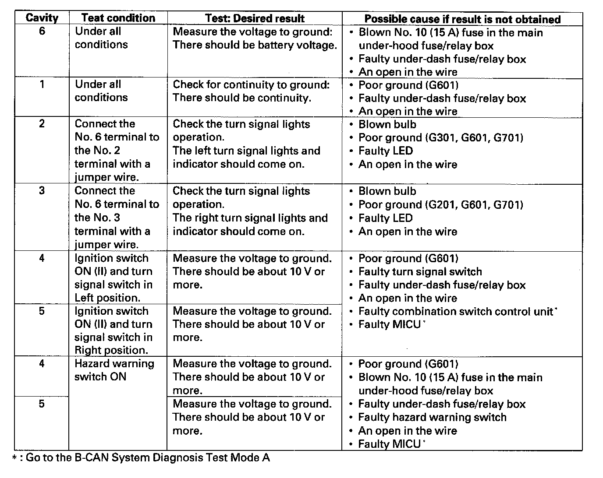

Turn Signal/Hazard Relay Input Test
Turn Signal/Hazard Relay Input Test1. Remove the turn signal/hazard relay 1 (A) from the driver's under-dash fuse/relay box (B).
2. Inspect the relay and fuse/relay box socket terminals to be sure they are all making good contact.
- If the terminals are bent, loose, or corroded, repair them as necessary, and recheck the system.
- If the terminals look OK, go to step 3.

3. Make these input tests at the fuse/relay box.
- If any test indicates a problem, find and correct the cause, then recheck the system.
- If all the input tests prove OK, the turn signal/hazard relay must be faulty; replace it.